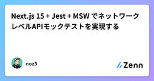
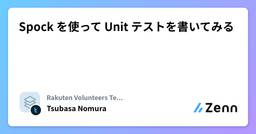
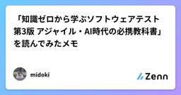

Zennの「Test」のフィード
フィード
【Go】Goのテストに入門してみた！ ~一部のサブテスト実行編~
Zennの「Test」のフィード
はじめに前回はテーブル駆動テスト（Table Driven Test）について見ていきました。今回は「一部のサブテストを実行する方法」に入門していきます。前回の記事はこちら！https://zenn.dev/tmyhrn/articles/8dcc4198903d7f この記事でわかること一部のサブテストを実行する方法正規表現を用いたテストケースのパターン 実装してみたmain.gopackage mainimport ( "testing" "unicode/utf8")func Length(s string) int {...
12時間前
Android Studioで低スペックエミュレータを作成してアプリの動作を検証する方法
Zennの「Test」のフィード
Android Studioで低スペックエミュレータを作成してアプリの動作を検証する方法 🤔 こんな悩みはありませんか？アプリ開発をしていて、こんな経験はありませんか？QA用の端末では動くのに、ユーザーから「重い」「落ちる」という報告が来る古い端末や低スペック端末での動作確認をしたいけど、実機がないメモリ不足やパフォーマンス不足での不具合を事前に発見したい実際に僕も、QA用の端末で問題なく動いていたアプリで、ユーザーからバグ報告があったのに同じ端末では再現しないという状況に遭遇しました。そこで、Android Studioのエミュレータで意図的に低スペック環境を作...
2日前
testcontainers for go + flyway で実現する統合テスト
Zennの「Test」のフィード
対象読者Go を採用した開発環境に統合テストを導入したいflyway を採用した開発環境に統合テストを導入したいtestcontainers + flyway の組み合わせに興味がある 概要https://github.com/sugawani/testcontainers-go-with-flyway開発言語が Go でマイグレーションに flyway を使用している環境で統合テストを導入しようとした際に testcontainers for go が良さそうだったので実装してみました メリット開発者が dockerfile などの docker 周りを意...
2日前

生成AIでのテスト設計はこの「勘所3つ」を押さえれば大丈夫 3
3
Zennの「Test」のフィード
はじめにこんにちは！アルダグラムでQAのお手伝いをしているmiyashitaです！最近、QAのシステムテスト設計でもAI使いたいなぁ～と思い、色々と試行錯誤していました。その中で、こんな勘所を持っていたらAIでうまくテスト設計していけるのかも？と感じたところがありましたので、今回はそちらを紹介できればと思います。 使用するツールChatGPT：o4-mini-high 今回やりたいこと仕様書を解析して、テスト観点表を作成してもらう仕様書及びテスト観点表を基に、テストケースを作成してもらう 主な勘所AIをテスト設計で活用するための勘所は、以下の3つです...
3日前
【Go】Goのテストに入門してみた！ ~Table Driven Test編~
Zennの「Test」のフィード
はじめに前回は、Goにおけるテストの基本を学びました。今回は、Goでよく使われる 「テーブル駆動テスト（Table Driven Test）」 に入門します。前回の記事はこちら↓https://zenn.dev/tmyhrn/articles/7fc1bc9c9e634d この記事でわかることTable Driven Testの概要実装方法実装時に押さえておきたいポイント 実装してみた前回に引き続き、マルチバイトでの文字列カウントについてのテストケースを見ていきます。main.gopackage mainimport ( "testing...
3日前

Next.js 15 + Jest + MSW でネットワークレベルAPIモックテストを実現する
Zennの「Test」のフィード
Next.js 15 + Jest + MSW でネットワークレベルAPIモックテストを実現する 📖 概要このガイドでは、Next.js 15プロジェクトにMSW（Mock Service Worker）を導入し、JestでネットワークレベルのAPIモックテストを実現する方法を詳しく解説します。 🎯 目標ネットワークレベルモック: fetch APIが実際に呼ばれ、MSWがレスポンスを返す型安全なテスト環境: TypeScriptによる型保証保守性の高いテスト: テストケースの追加・変更が容易Next.js 15対応: App Routerやその他機能との...
3日前
[Playwright] ログイン状態でテストする簡単なやり方
Zennの「Test」のフィード
🌱 はじめにPlaywrightで認証のテストに苦手意識があり、避けていましたが、業務でやる必要が発生したため、試行錯誤しながら実装しました。その時に発見した簡単なやり方を紹介します。紹介する方法では実現できない場合や詳細な内容を知りたい方は、公式ドキュメントをご確認ください 🌱 結論!playwright.config.tsに指定のsession.jsonを設定する各テストごとに指定のsession.jsonを設定する 🌱 事前準備!下記のsession.jsonは、サンプルとしてiron-sessionを設定にしております。ご参考にする場合...
3日前
PrismaからPGliteに繋げてリポジトリ層のテストをお手軽にやってみた
Zennの「Test」のフィード
こんにちは、エンジニアの籏野です。今回はPGliteとPrismaを用いて、実際にデータベースに接続して行うリポジトリ層のテストについて紹介します。作成したサンプルプロジェクトは以下のリポジトリに置いていますので、合わせてご確認ください。https://github.com/taku-hatano/pglite-prisma-test リポジトリ層におけるテストの課題クリーンアーキテクチャのようなデザインパターンを利用する場合、リポジトリ層を利用してビジネスロジックとデータアクセス層を分離することはよくあるかと思います。これにより、ビジネスロジック層においてはリポジトリ層を...
3日前
【Go】Goのテストに入門してみた！ ~基本編~
Zennの「Test」のフィード
はじめにこれまでGoでAPIを開発してきましたが、実はテストコードを書いた経験はありませんでした。（テストの様子をスクショに撮って証跡として残していました）業務でも積極的にテストコードを書いていこうという方針になりましたので、Goでのテストに入門してみようと思います。 この記事でわかることGoでの基本的なテストの書き方テストを書く上での押さえなければいけないポイントテスト関数がどのように実行・評価されるかの基本的な流れ テストコード書いてみたとりあえず、テストコードを書いてみました。今回はマルチバイトでの文字列カウントのテストにしてみました。main_...
5日前

Spock を使って Unit テストを書いてみる
Zennの「Test」のフィード
はじめにJava のテストというと JUnit を使うことが多いかと思いますが、今回は Spock というテストフレームワークを使ってみて、とても便利だったので紹介します。Spock は Groovy ベースのテストフレームワークで、特にBehavior Driven Development(BDD)スタイルのテストを書くのに適しています。JUnit と比べて、より表現力豊かなテストを書くことができ、読みやすさも向上します。この記事では基本的な Spock の使い方、使う際の注意したいポイントをいくつか紹介します。以下は公式のドキュメントです。詳細な情報は公式ドキュメントを...
5日前

【JSTQB解説】第1章：テストの基礎 - ソフトウェアテストの基本概念と7つの原則
Zennの「Test」のフィード
【JSTQB Foundation Level V4.0 完全解説シリーズ】第1章：テストの基礎 この記事についてJSTQB Foundation Level資格を取得した経験と、実際のQA業務で学んだことを基に、シラバスの内容を実践的な視点で解説します。こんな方におすすめです。JSTQB Foundation Level資格の取得を検討しているテスト業務に配属されたばかりQAエンジニア・テストエンジニアに興味がある開発者だがテストについても学びたい記事の内容は以下の通りです。なぜテストが重要なのかテストの7つの基本原則テスト担当者の役割と必要なスキル...
5日前

「知識ゼロから学ぶソフトウェアテスト 第3版 アジャイル・AI時代の必携教科書」を読んでみたメモ
Zennの「Test」のフィード
はじめに環境が変わり開発に関わっていくことになったため、テスト知識０の状態で、「知識ゼロから学ぶソフトウェアテスト 第3版 アジャイル・AI時代の必携教科書」を読んでみました。読みながらのメモを書いた記事になります。 読書メモ 1章ソフトウェアで大事なのはどの機能でバグが出やすいか、その部分に対してどのようなテスト手法を適用すれば十分な品質が得られるか知ること全くバグのないソフトウェアは存在しない、完全なテスト手法が存在しないから完璧でなく十分な品質をもつソフトウェアを目指すテスト手法を学ぶ 2章 ホワイトボックステストホワイトボックステストプログ...
6日前
Claudeにテストを自動実行させる方法：効率的なテスト駆動開発の実践
Zennの「Test」のフィード
※この記事はAIによって生成されました。 はじめにAI アシスタントの Claude を使って、テストの作成から実行、結果の解析まで自動化することで、開発効率を大幅に向上させることができます。この記事では、Claude にテストを実行させる具体的な方法と実装パターンを紹介します。 基本的なテスト実行の依頼方法 1. 単純なテスト実行最もシンプルな方法は、Claude に直接テストの実行を依頼することです：「このプロジェクトのテストを全て実行して、結果を教えて」Claude は以下のような手順でテストを実行します：プロジェクトの構造を確認テストフレームワークを識別...
6日前

「うまくいかない」が宝物になるとき 〜デザイン思考のテストって？〜
Zennの「Test」のフィード
この記事が役立つ人様々な思考法について学んで実践したい人駆け出しのエンジニアデザイン思考って、なんとなくアイデアを出すとか、共感するとか、そんなイメージがあるかもしれないけど──じつは最後のステップ「テスト」が、いちばん宝物が眠ってる場所だったりするんだ。 テストって、どんなことするの？ここで言う「テスト」は、学校のテストみたいに正解を出すことじゃなくて、「作ったものを実際の人に見てもらって、どう感じるか、どこが使いにくいかを聞いてみる」 ってこと。フローチャートたとえばこんな感じ。作ったプロトタイプを友だちに試してもらう5分で答えてもらえる簡単なアンケ...
9日前
Shadow Testingで実現する安心な機能リプレイス
Zennの「Test」のフィード
!この記事は毎週必ず記事がでるテックブログ Loglass Tech Blog Sprint の101週目の記事です！2年間連続達成まで残り5週となりました！ログラスの龍島（@hryushm）です。最近は家でミニトマトを育てていましたが、この暑さで枯れてきてしまったのが悲しいです。本記事では、参照系機能の大規模リプレイスを行った際に、Shadow Testingを導入して得られた知見を共有します。上手く活用できれば非常に強力なテスト手法だと感じたので参考になれば幸いです。 Shadow TestingとはShadow Testingは、本番環境のトラフィックを新旧両方のシ...
9日前
【Laravel】自動テスト実行のためのPHPUnit環境構築
Zennの「Test」のフィード
はじめにLaravelでWebアプリケーションを開発し、デプロイが目前に迫ると「本当にすべて正常に動作するのか」と不安になる瞬間が訪れます。本番デプロイ前は、ローカルと挙動が異なることもあるため、事前の検証は不可欠ですが、自動テストを実施する前には様々な準備が必要です。本記事では、自動テスト実行のためのPHPUnit環境構築準備に必要な項目を紹介します。 対象者Laravelアプリを初めて本番公開するエンジニアアプリの手動テストに不安がある方デプロイのたびに同じ手動テストの繰り返しから解放されたい方 テスト環境の準備手順自動テストの目的は、本番環境にデプロイする...
11日前
USB-CANでmibotのソフトウェアテストを自作してみた
Zennの「Test」のフィード
はじめにこんにちは！KGモーターズ株式会社でエンジニアをしている中村です。KGモーターズは、今日より明日が良くなる未来を創る をビジョンに掲げ、広島を拠点に1人乗り小型 EV mibot を開発しているスタートアップです。車のソフトウェア開発のテストについて、最終的には車に載せて確認することは必須ですが、開発段階で毎回車に載せて...テスト...を繰り返していたらあまりにも時間がかかってしまうため、少しずつスケールしたテストをしていくことが一般的です。その中でも今回は車載コンピューター/アプリケーション周りのテストについてです。開発途中のmibotのディスプレイアプリを少し...
11日前
『テストの7つの原則』 〜 パート⑥ 〜
Zennの「Test」のフィード
はじめに現在、アプリ開発者としてプロダクトの持続的な成長やユーザーへのコミットに寄与するためにも、SDLC全体を見渡して開発をすること、および、それにはテストに関する体系的な知識が必要だと考え、それを効率良く学べるJSTQB Foundation Levelの資格試験の勉強をしていました。この記事ではそこでの学びをアウトプットしたと思います。今回はその中でも「テストの7つの原則」の一部について記事にしたいと思います。なお今回は テストはコンテキスト次第こちらの原則について記事にしてみようと思います。 テストはコンテキスト次第とはこれはテストには...
11日前
go言語ArchUnitっぽいテストコードを作った
Zennの「Test」のフィード
依存関係をUTで制御する良さそうなライブラリがなかったので、サクッと自作（AI作）したのでメモ。import ("fmt""golang.org/x/tools/go/packages""strings""testing")type DependencyRule struct {Package string // パッケージ名ShouldNotDepend []string // 禁止される依存パッケージのリスト}func CollectDependencies(rules []DependencyRule) []error {...
14日前
AIで自動テストのプロセスを自動化する
Zennの「Test」のフィード
このツールのgithubリポジトリはコチラ上記はJaSST nano vol,50での発表スライドです。この記事は、当日お話しした内容を補完する内容の記事です。 1. QA現場の課題感 & テスト自動化ツールを作ったきっかけ私はQAの仕事の中でも、“バグを探索するためのテスト”やプロセス改善といった予防的なQA活動にクリエイティブな楽しさを見出し、そこにこの仕事の魅力を感じています。一方で、決まった入力で分かりきった期待値を出す “チェック作業”――“ クネビンフレームワーク”でいうところの 『明確』 ばかり繰り返すのは、正直あまり楽しくないんです。（もう完全に個...
17日前